Foto Walk 2026 — Alicante
EL CENTRO DE ALICANTE ACOGE CON ÉXITO EL FOTO WALK 2026
El primer sábado de este otoño, antes de que el sol subiera demasiado alto y las sombras se volvieran demasiado marcadas, mi compañero del club de fotografía, Lev, y yo nos reunimos con nuestro grupo en la zona del Mercado de Alicante para la segunda edición del Foto Walk. La edición debut del año pasado reunió a más de mil fotógrafos en ciudades como Nashville, Glasgow y París, y esta vez el evento abarcó más de 100 paseos por todo el mundo, entre ellos el de Alicante.
Vestidos de rojo a juego —el color corporativo de Foto para que la gente pudiera identificarnos fácilmente—, guiamos a nuestro grupo de una docena de asistentes desde los puestos de flores del Mercado Central, bajando por la calle Tomás López Torregrosa. Allí, las líneas verticales de los edificios y la luz mediterránea reflejada en el pavimento hicieron que las cámaras se pusieran en marcha enseguida. Nos reagrupamos brevemente en la Plaza de San Cristóbal antes de adentrarnos en las estrechas calles empedradas del casco antiguo.
Nuestra parada más larga fue en la Plaza del Abad Penalva, junto a la Concatedral de San Nicolás: una luz excelente para resaltar las texturas de la piedra, los arcos y las sombras del patio, además de ser el lugar perfecto para tomar algo y compartir impresiones. Esta zona peatonal es también un rincón fantástico para los amantes de la fotografía callejera, tanto principiantes como veteranos. Tras fotos del grupo, y desde allí, atravesamos el laberinto de callejones hasta la Plaza de la Santísima Faz, donde las palmeras proyectaban hermosas sombras caladas sobre la plaza.
A continuación llegó la espectacular entrada a través del arco de piedra hacia la Plaza del Ayuntamiento, donde aprovechamos los encuadres naturales del pasaje. Más tarde, concluimos el tramo guiado bajo las palmeras de la Explanada de España, donde pudimos fotografiar el icónico paseo de mosaico ondulado con total tranquilidad y sin necesidad de cruzar ni esquivar el tráfico.
Los participantes aprovecharon para hacer algunas fotos más por su cuenta, y algunos nos quedamos tomando algo y charlando en una terraza cercana. En definitiva: una luz estupenda, excelente compañía y ese tipo de conversación que solo surge entre personas capaces de detenerse a media frase porque han visto la misma sombra que tú.
Si estuviste allí, tal como comentábamos, os agradeceríamos lo siguiente:
- Aplicación Foto: Descargad la aplicación Foto (fotoapp.co), o aquí en Google Play, subid vuestras fotos de la caminata y usad la etiqueta interna
Foto Walk(oPhoto Walk) para que los participantes de todo el mundo puedan ver nuestras capturas de Alicante. - Instagram: Si publicáis en Instagram, etiquetad a @thefotoapp y usad el hashtag #FotoWalk para que el propio equipo global de Foto pueda compartir nuestras historias.
Además, si participaste, puedes compartir tu mejor selección de fotos del recorrido respondiendo a esta entrada y en unos días pondré una galería con la selección en esta misma web. Puedes enviármelas a través de cualquiera de estas opciones:
- Utilizando los datos en la tarjeta (la imagen) que se ve en página de contacto.
- O, en esa misma página, enviando un mensaje desde el formulario de contacto. Pega un enlace (URL) para descargar tus fotos (p.ej. Google Fotos, WeTransfer, Dropbox o el servicio que tú suelas utilizar).
- O bien, si tienes una cuenta de Google, añadiendo tus imágenes directamente a este álbum compartido de Google Fotos.
Muchas gracias a todos los afables participantes y, sobre todo, a Michael (CEO de Foto) y al pequeño equipo detrás de ese logo rojo que ya nos resulta tan familiar, tanto por la iniciativa como por confiar en nosotros para organizar el evento de 2026 aquí, en la Costa Blanca.
Aquí puedes ver algunas fotos de ejemplo tomadas en la zona:
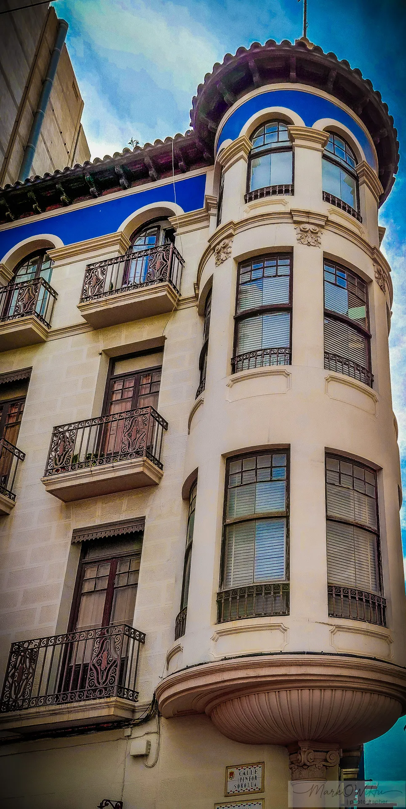
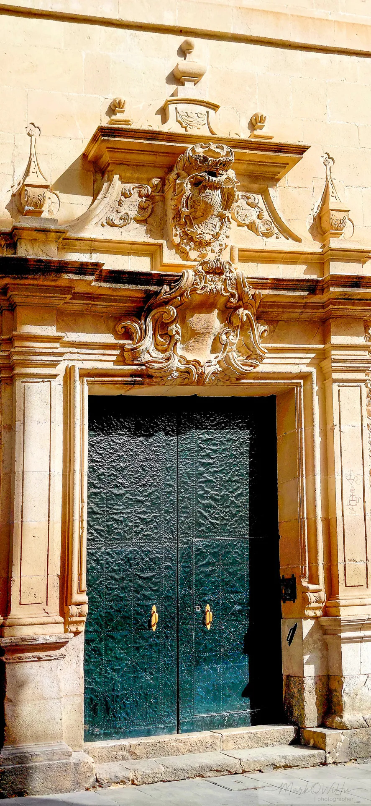
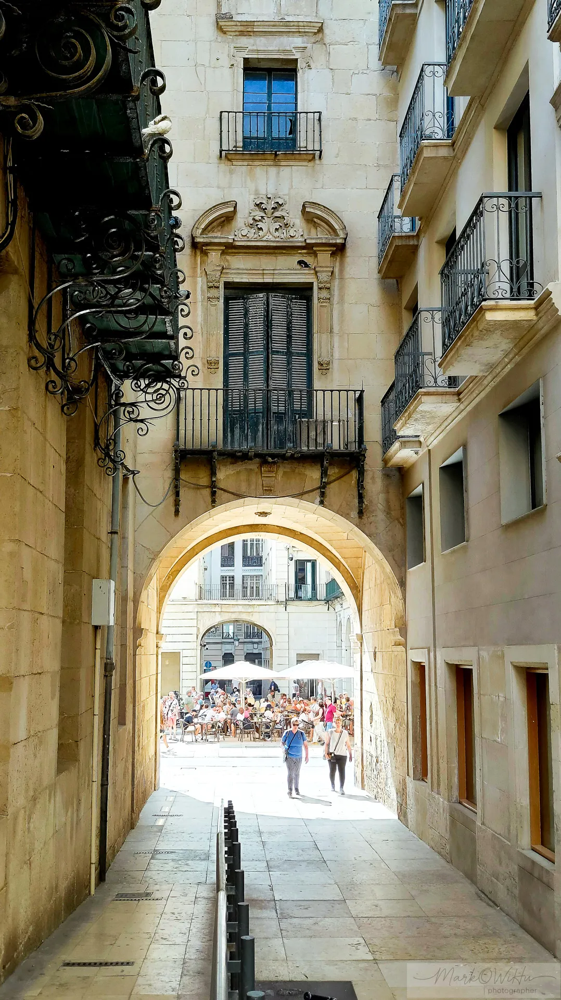
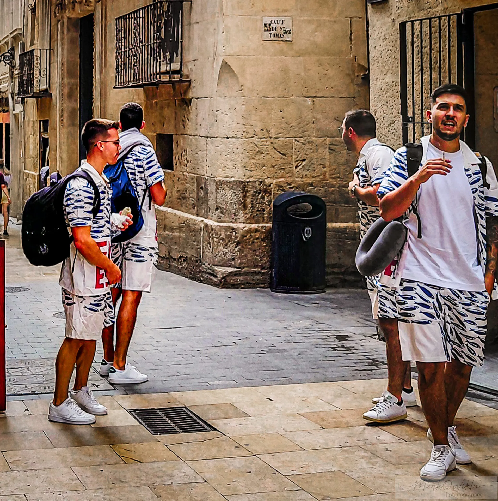
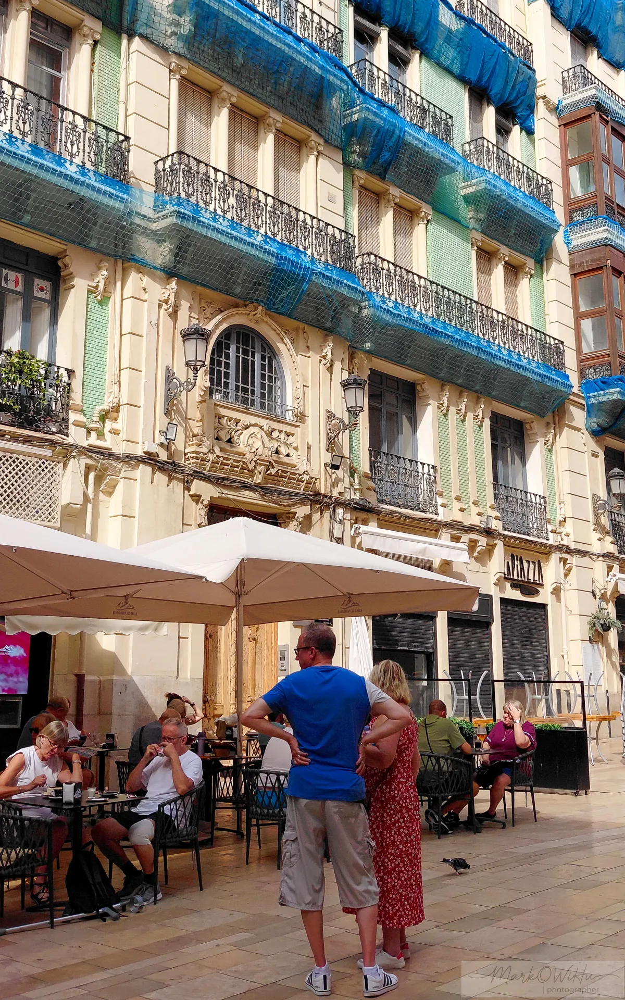
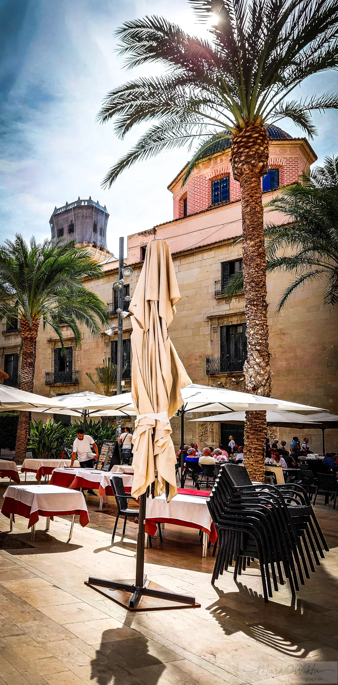
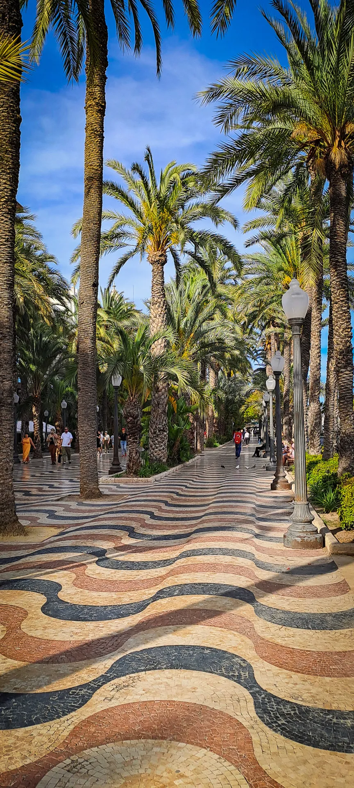
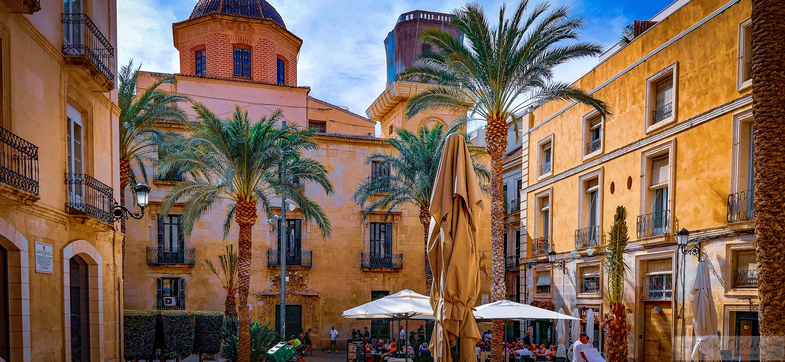
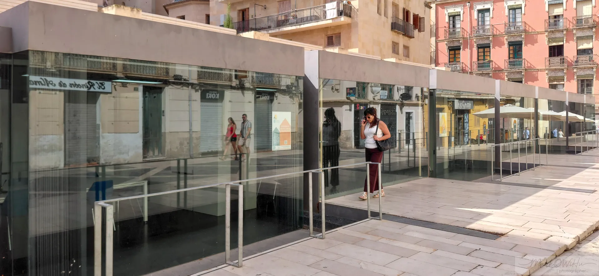
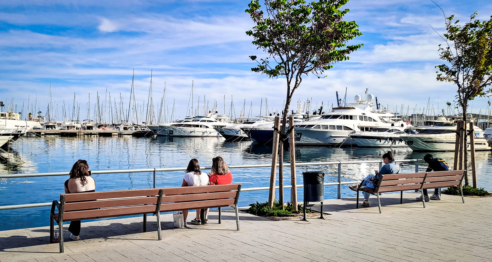
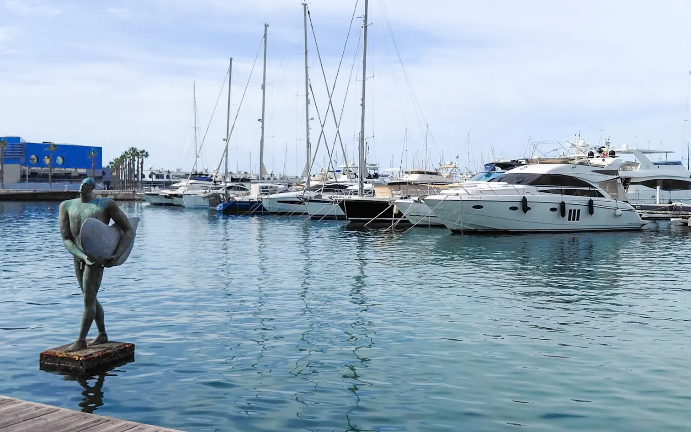
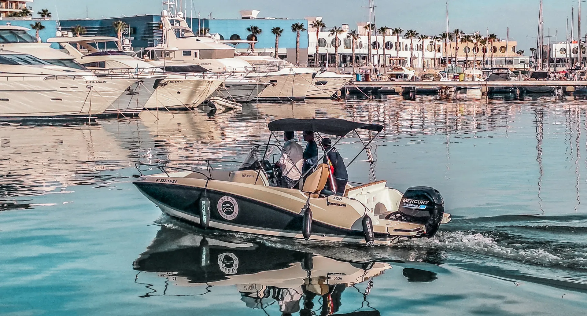